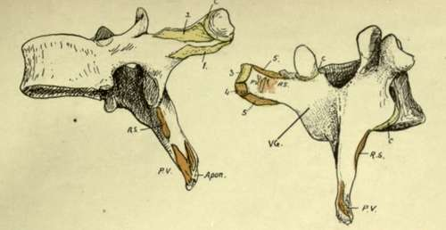
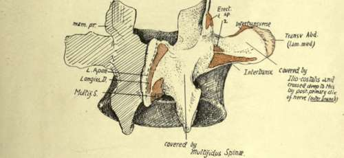
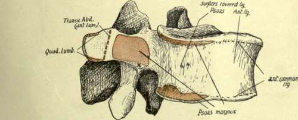

Lumbar Vertebra
Description
This section is from the book "The Anatomy Of The Human Skeleton", by J. Ernest Frazer. Also available from Amazon: The anatomy of the human skeleton.
Lumbar Vertebra
Distinguished by their large size and massive structure, with absence of transverse foramen and costal facets. They present large kidney-shaped bodies, slightly deeper in front than behind : pedicles thick, with very shallow upper notches : transverse processes comparatively slender, with the small accessory tubercles behind them. Articular processes vertical and curved transversely so that the lower pair look forwards and outwards and are nearer together than the wider upper pair, which are curved to look inwards and backwards to receive them. Mammillary tubercles are present on the back aspect of the upper processes, to afford origin to post-vertebral muscles. Lamina deep but short, and the spine is horizontally directed, thick and square-cut, when viewed from the side.
Fig. 26.-A mid-dorsal vertebra, showing markings on processes of the neural arch. C, capsule of costo-transverse joint; 1, superior costo-transverse ligament ; 2, 3, middle and posterior (external) costo-transverse ligaments; 4, origin of Levator costa? ; 5, intertransverse musculotendinous bands. The post-vertebral muscles occupy the vertebral groove, VG ; the deepest of these are Rotatores spinae, RS, while the attachments of the more superficial muscles (Multifidus, Semispinalis, and Spinalis dorsi on the spine) are indicated at PV. All these are covered by the aponeurotic sheets (apon.) of origin of Trapezius, Latissimus, and vertebral fascia.
Fig. 27.-A mid-lumbar vertebra. In the upper figure observe that the mammillary process gives origin to Multifidus (1), while the accessory process, further out, has Longissimus (2) attached to it. The post-vertebral muscles lie against the side of the spine, cover the lamina, and external to this lie on the transverse process and intertransverse structures and middle lamella of Transversalis. In the lower figure notice the division of the transverse process into two areas by insertion of anterior lamella of Transversalis, with Quadratus lumborum, deep to this lamella, covering the process external to the line, and Psoas, superficial to the lamella, on the bone internal to the line. The tendinous origin of Psoas is marked at x. The lumbar vessels lie on the body between the origins of Psoas from it.
The lumbar column rests on the top of the sacrum, with which it makes a prominent lumbosacral angle, owing to the sudden change in direction as the sacrum turns backwards and downwards : the sharpness of the angle, however, is modified by the construction of the last lumbar body to form a transitional bone. Thus it occurs that this body is wedge-shaped, markedly deeper in front, and its spine is much smaller owing to the limitation of space resulting from the backward turn of the sacrum : this last character is more marked in the female, owing to the more pronounced sacral bend. The spinal foramen is triangular and large, containing the nerves that constitute the cauda equina with their coverings.
Fifth Lumbar Vertebra
In addition to the modifications already noticed in the body and spine, the transverse processes are not very long, but are thick and strong, arising not only from the arch, but spreading their bases forward on to the body : it thus happens that the issuing nerve must pass over this base, so that the upper intervertebral notch is described as grooving it.* From this broad base the process narrows to a blunt tip, to which the ilio-lumbar ligament is attached. This strong band, helping to support the column between the two innominate bones, accounts for the strength of the process, and also for its direction, which is upwards as well as outwards. The lower articular processes articulate with the sacral processes, which are far apart, so that on the last lumbar vertebra the lower processes are practically as far apart as the upper. The upper and lower processes together form a mass which projects somewhat into the neural canal, sharpening its outer angles, and in front of this the pedicles show inner margins thinner than in the higher bones, below which a sloping surface leads to the lower intervertebral notch.
Examination of the upper and lower borders of the lumbar bodies enables one to recognise the position of certain attached structures (Figs. 27 and 35).
Each border, along the lateral aspect of the body, is rendered heavy and thick by the connection with it of a fibrous sheet that is thrown across the concavity of the body and affords origin to the Psoas : the sheet and the muscle may encroach on the bone to a greater extent than in the figure, as may be seen on some bones by observing the extent and depth of the roughened area.
The concave surface between these ridges lodges the lumbar vessels and twigs from the sympathetic.
The anterior common ligament covers the front of the body between these lateral areas, and the ridges to which it is fixed are less prominent than at the sides; it separates the aorta and origins of the lumbar arteries from the bone. The crura of the diaphragm are attached to this ligament and through it to the upper two or three lumbar bodies, but no distinct marking can be assigned to them on the bones.
The Psoas also obtains origin from the front of all the lumbar transverse processes. The extent of this origin appears to be somewhat variable, but, being by muscular fibre, it leaves no mark on the bone ; there is, however, a tendinous slip generally in the lower and inner part of each of these origins, and a corresponding slight roughening is to be found at the inner end of the lower border of the process.
* The transverse process of the fourth exhibits a tendency to forward extension like the fifth.
Continue to: